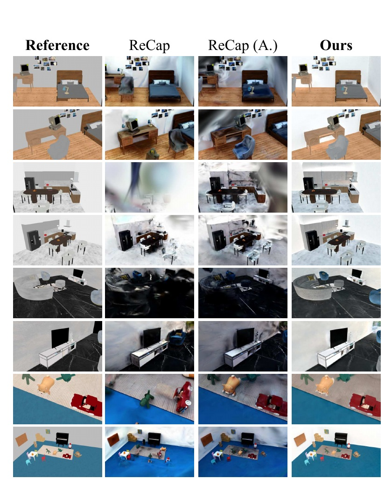

Additional Visual Analysis
Additional held-out-view analyses show that LightFuse recovers cleaner base color and roughness while producing more complete depth and surface normals across Bedroom, Kitchen, Livingroom, and Playroom.



Additional Relighting Comparisons